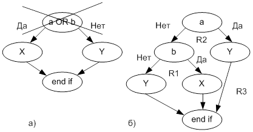
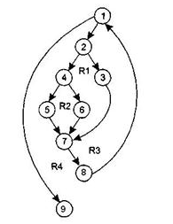

Способ тестирования базового пути.
Суть метода (Т. МакКейб, 1976 г.) состоит в том, чтобы представить программу в виде графа, узлами которого являются отдельные операторы или их линейные последовательности. Выполнение тестового варианта соответствует отдельному пути в таком графе (называемом потоковым , т.к. путь в графе реализует поток управления при выполнении программы). Набор тестов строится таким образом, чтобы проверить базовое множество путей (маршрутов) в программе. Это гарантирует однократное выполнение каждого оператора программы при тестировании. Способ тестирования базового пути даёт возможность получить оценку комплексной сложности программы и использовать ее для определения необходимого количества тестовых вариантов.
Центральным понятием метода является потоковый граф. Он строится отображением управляющей структуры программы. В ходе отображения закрывающие скобки условных операторов и циклов (end if,end loop) рассматриваются как отдельные (фиктивные) операторы.
Узлы ( вершины ) потокового графа соответствуют линейным участкам программы, включают один или несколько операторов программы.
Дуги потокового графа отображают поток управления в программе (передачи управления между операторами).
Различают операторные и предикатные узлы. Предикатные узлы соответствуют простым условиям в программе. Составное условие программы отображается в несколько предикатных узлов. Составным называют условие, в котором используется одна или несколько булевых операций ( OR, AND ).
Например, фрагмент программы
if a OR b
then x
else y
End if
вместо прямого отображения в потоковый граф вида, показанного на рис. 2.14а, отображается в преобразованный потоковый граф ( рис.2.14б )

Рис. 2.14. Отображение фрагмента программы в потоковый граф
Замкнутые области, образованные дугами и узлами, называют регионами. «Окружающая среда» графа рассматривается как дополнительный регион ( например, граф рис. 22б имеет три региона — R1, R2,R3).
Вторым важным понятием метода является цикломатическая сложность — метрика ПО, которая обеспечивает количественную оценку логической сложности программы. В способе тестирования базового пути цикломатическая сложность определяет количество независимых путей в базовом множестве программы и верхнюю оценку количества тестов, которое гарантирует однократное выполнение всех операторов.
Независимым называется любой путь который вводит новый оператор обработки или новое условие. В терминах потокового графа независимый путь должен содержать дугу, не входящую в ранее определённые пути. Все независимые пути графа образуют базовое множество.
Цикломатическая сложность вычисляется одним из трёх способов:
цикломатическая сложность равна количеству регионов потокового графа;
цикломатическая сложность определяется по формуле:
V (G) =E-N+2 где E — количество дуг, N — количество узлов потокового графа;
цикломатическая сложность формируется по выражения V(G)=p+1, где p — количество предикатных узлов в потоковом графе G.
Шаг 1. На основе текста программы формируется потоковый граф:
нумеруются операторы текста;
производится отображение пронумерованного текста программы в узлы и вершины потокового графа.
Шаг 2. Определяется цикломатическая сложность потокового графа (по любой из трёх формул).
Шаг 3. Определяется базовое множество независимых линейных путей.
Шаг 4. Подготавливаются тестовые варианты, инициирующие выполнение каждого пути. Каждый тестовый вариант (ТВ)формируется в следующем виде:
Исходные данные (И Д):
Ожидаемые результаты (ОЖ. РЕЗ.):
Исходные данные должны выбираться так, чтобы предикатные вершины обеспечивали нужные переключения — запуск только тех операторов, которые перечислены в конкретном пути, причём в требуемом порядке
(Задача на «занимательное программирование» — набор программ, выполняющих обработку текста на каком-либо языке и реализующих шаги 1 -4 алгоритма )
Пример 1.Рассмотрим процедуру “сжатия” файла, каждая запись которого состоит из двух полей, причем в результате обработки создается файл, записи которого содержат только одно поле, наибольшее из двух а или b.
Текст программы в псевдо-алгоритмической записи имеет следующий вид ( слева пронумерованы линейные участки и предикативные узлы ).
Procedure PRESS
1) Открыть_файл( );
1) do while ( NOT eof )
2) читать_запись( );
2) if ( запись_пуста )
3) then удалить_запись( );
4) else if ( поле а >= поля b)
5) then удалить_поле( b );
6) else удалить_поле( a );
7) end if;
8) end do;
9) Закрыть_файл( );
9) End proc
Потоковый граф изображен на рис 2.15

Рис. 2.15. Преобразованный потоковый граф процедуры «сжатия»
Этот потоковый граф имеет четыре региона, 9 узлов и 11 дуг. Независимые пути начинаются в начальном узле, а заканчивается в конечном узле графа и формируются в порядке от самого короткого к самому длинному. Такими путями будут следующие пути:
Путь 1:1-9.
Путь 2:1-2-3-7-8-1-9.
Путь 3: 1-2-4-5-7-8-1-9
Путь 4: 1-2-4-6-7-8-1-9.
Цикломатическая сложность графа V(G), вычисленная каждым из трёх способов равна:
потоковый граф имеет 4 региона - V(G) = 4;
V(G)=11дуг - 9 узлов + 2=4;
V (G) =3 предикатных узла + 1=4.
Таким образом, уровень сложности программы равен четырём.
Тестовые варианты для независимых путей будут иметь вид.
Путь 1:1-9.
ТВ1 :ИД: файл пуст
ОЖ. РЕЗ.: корректное завершение программы, файл не изменен.
Путь 2:1-2-3-7-8-1-9.
ТВ2: ИД: файл содержит одну пустую запись
ОЖ. РЕЗ.: корректное завершение программы, на выходе — пустой файл.
Путь 3:1-2-4-5-7-8-1-9.
ТВ3: ИД: файл содержит одну запись, в которой поле а больше поля в
ОЖ. РЕЗ.: корректное завершение программы, на выходе — файл с одной записью а.
Путь 4:1-2-4-6-7-8-1-9.
ТВ4: ИД: файл содержит одну запись, в которой поле в больше поля а
ОЖ. РЕЗ.: корректное завершение программы, на выходе — файл с одной записью в.
Более сложный пример рассмотрен в [7].